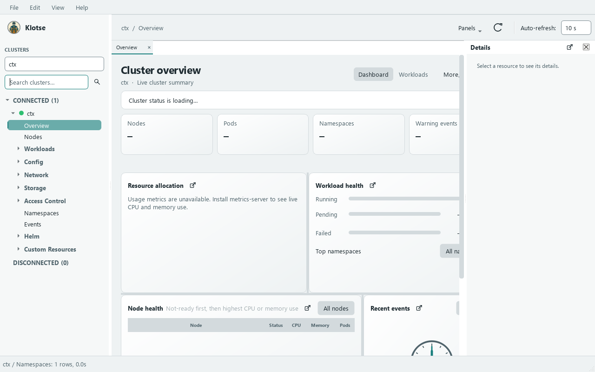
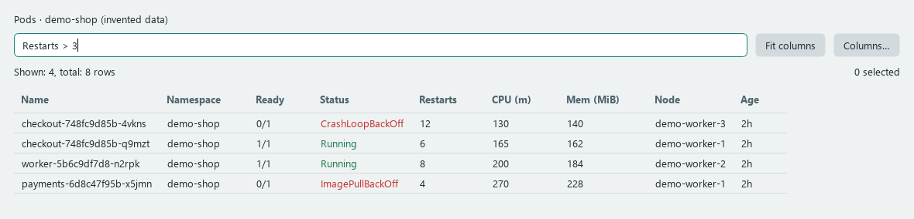
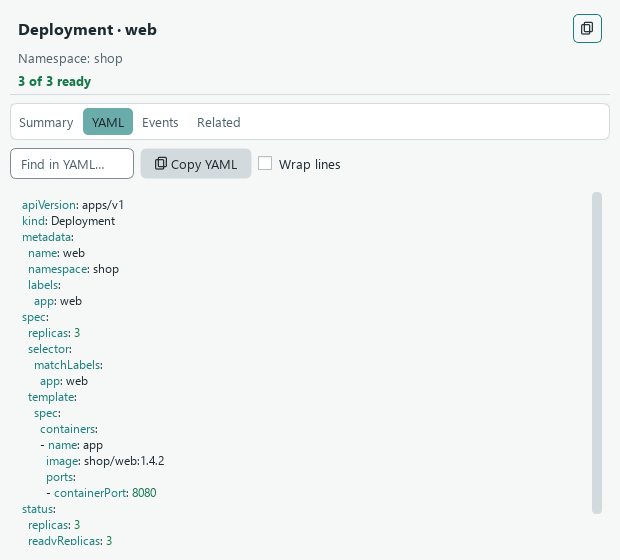
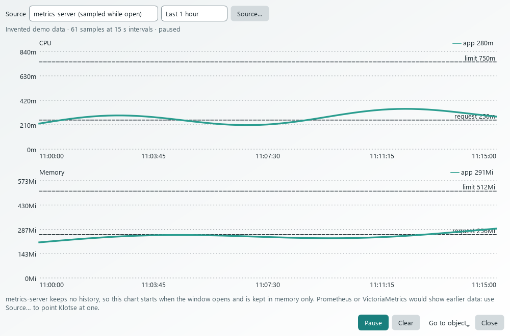
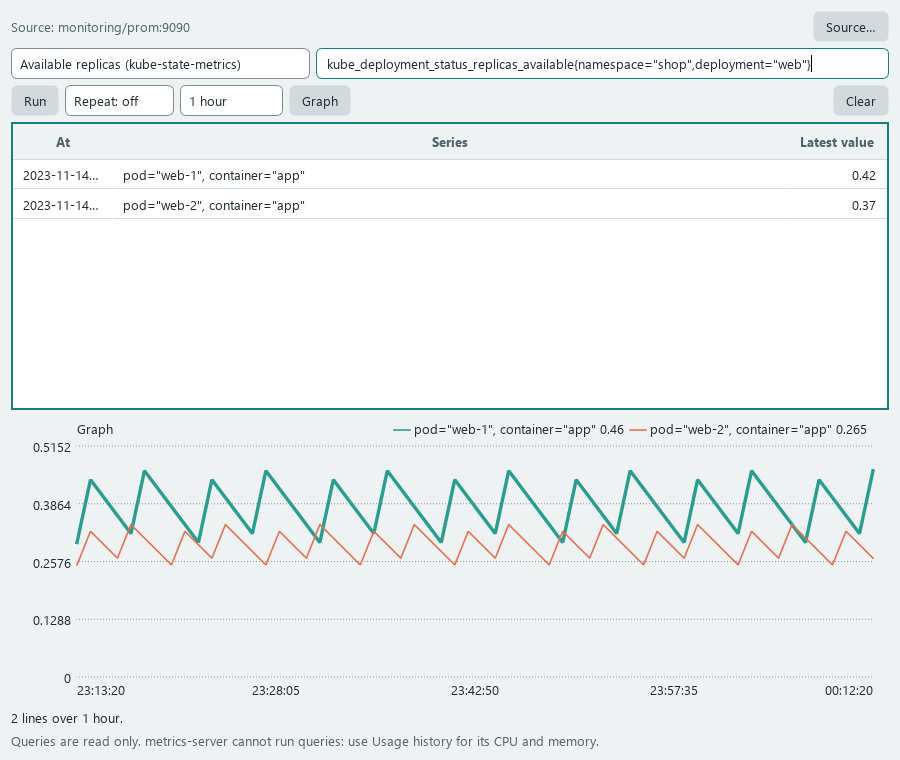
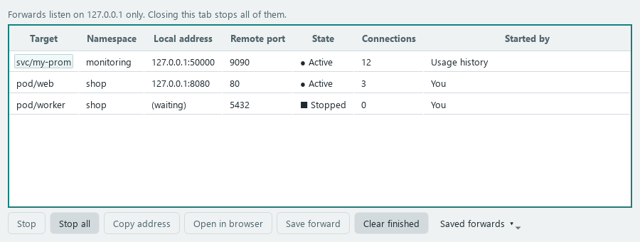
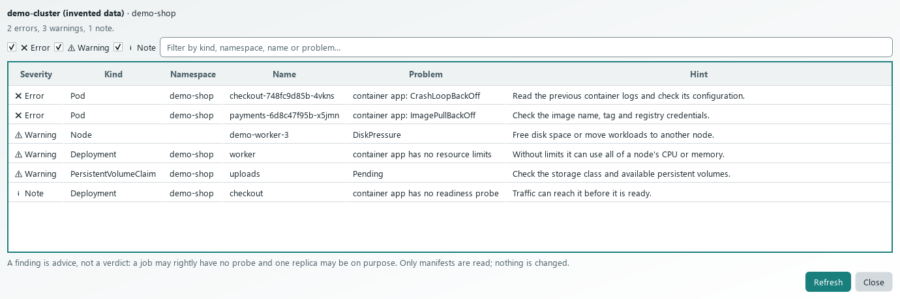

Klotse, a calmer way to read your clusters
Klotse is a desktop manager for Kubernetes. It uses the kubeconfig you already have, shows each cluster you open in its own tab, and checks every change with the cluster before it is saved.
This guide walks through the main windows, with pictures. The data in the screenshots is invented.


1. Start and connect
Nothing connects when Klotse starts. You choose which clusters to open.
- Start Klotse. It reads your kubeconfig (the
KUBECONFIGvariable, or~/.kube/config). - Right-click a cluster in the list and choose Connect, or double-click it.
- Work in the tab. Each open cluster has its own tab and its own connection.
- Quit normally. Answer Yes to remember the open clusters for next time.
Using a different kubeconfig? Open Edit > Preferences > General and choose it there. Klotse closes open clusters after you confirm.
2. Clusters and the navigator
The cluster list on the left keeps connected clusters at the top. Use it to find, group and rename clusters.
Switch fast
The drop-down above the list switches between open clusters. It shows each cluster's alias.
Search
The search box filters the list. The button beside it shows or hides the box.
Group
Right-click the list to make groups and move clusters into them. Suggest groups… does it by name.
Alias
Rename alias… gives a cluster a friendly name. The real context name stays the same.
3. Views, tables and filters
Every kind of object has a view: pods, deployments, nodes, services, secrets, events and more. Tables are built to be scanned.


Restarts > 3 and kind = pod*. A bad expression filters nothing and says why.- Sort by any heading. Age sorts by real time, so
1dcomes before8h. - Select several rows with Ctrl or Shift. Bulk actions apply to the selection, after one confirmation.
- Right-click a cell to copy it or to filter by it.
- Double-click a pod to open it, a container for its logs, or a node for its pods.
- Columns… shows, hides and reorders columns, and adds label columns. Your choice is saved.
- Refresh is automatic for workloads and nodes. Other lists reload on Refresh, or when you switch refresh on for them.
4. The Details pane
Select an object and its details open on the right. You can switch between four views, and every kind has the YAML view, even kinds with no summary.


Summary
A readable view for workloads, networking, RBAC and more.
YAML
The full object. Secrets stay masked until you choose to decode a key.
Events
What the cluster recorded about the object. These are kept for about an hour.
Related
Owners, what the object owns, and what it uses. Click one to go there.
In a narrow pane the buttons scroll sideways, so every view stays reachable.
5. Changing things safely
Klotse asks before it changes anything, and it checks each change with the cluster first.
Review before saving
Edit as a form or as YAML. Review changes shows the diff, after a server dry run.
Apply YAML
Paste or open manifests and check them with the server. Klotse never forces a conflicting field.
Scale and restart
Type a number, or *2, +1. Restarts roll the workload after you confirm.
Nodes
Cordon, drain and delete a node object. Deleting a node does not remove its machine. Drain asks before it bypasses disruption budgets.
Change log
View > Operations > Change log… lists what you changed from Klotse. It stores identity only, never content or Secret values.
6. Pods, logs and terminals
- Logs for a container, with wrap, timestamps and the previous instance.
- Logs of all pods… follows every pod of a workload in one tab (up to 40 streams).
- Shell and Attach open a terminal in the container. Windows, macOS and Linux each use their own terminal. An embedded terminal is in Preferences, off by default.
- Debug adds an ephemeral container. It stays on the pod until the pod is deleted.
- Terminate and Force terminate (zero grace period, which can remove the object early).
7. Usage history and metrics
See CPU and memory for a pod, node or workload, and ask Prometheus or VictoriaMetrics questions, without opening a graph tool.


Usage history
- Right-click an object and choose Usage history….
- Source… picks Prometheus or VictoriaMetrics, through the API server or a port-forward.
- Test checks the source before you press OK. OK keeps the connection Test started. Cancel closes it.
Metrics query
- Right-click an object and choose Metrics query…. The presets fill in CPU, memory, network, restarts and replica counts.
- Run adds rows below the earlier ones, each with the time it was sampled. Clear empties the table.
- Repeat runs the query every 5 seconds to 5 minutes. Graph draws it over 15 minutes to 24 hours.


8. Port forwards
Port forwards open a pod or service on this computer. They listen on 127.0.0.1 only.


- Port forward… on a pod or service starts a forward.
- Save forward keeps a forward so you can start it again with the same ports.
- Open in browser opens
http://127.0.0.1:<port>. - Closing the tab or the cluster stops every forward.
9. Insights
Look, don't touch: these windows only read.


latest tags and more. Each finding is advice, not a verdict.RBAC lookup
Who can do something, and what a user or service account can do.
My permissions
What you may do in a namespace, with a Can I? check.
Right-sizing
Requests and limits compared with current usage.
Trivy and Helm
Vulnerability reports from the Trivy Operator, and Helm releases.
10. Command palette and shortcuts
Press Ctrl+K (Cmd+K on a Mac) and type a few letters. The palette finds views, namespaces, clusters and every enabled menu action.
- Ctrl+K opens the palette.
- Ctrl+Shift+F searches objects across the cluster.
- The menu bar lists every other shortcut beside its item.
11. Preferences
Open Edit > Preferences. Settings are stored in your user settings folder, and Open config folder shows where.
General
Kubeconfig, usage-history SSL and certificate defaults, metrics-query autocomplete, and a timing log for slow loads.
Terminal
The macOS terminal (Terminal or iTerm2) and the embedded terminal.
Plugins
Optional plugins, such as the AWS plugin for node details. Off until you enable them.
Help and troubleshooting
A cluster will not connect
Check that the kubeconfig context works in kubectl, and that the authentication helper it names is installed. The error says which step failed, and Retry tries again.
A list says "forbidden"
Your account has no permission for that kind. View permissions shows what you can do.
Usage history shows only metrics-server
No Prometheus or VictoriaMetrics source answered. The status line under the chart says which service failed and why. Choose a source with Source….
A port forward fails
The Port forwards tab shows kubectl's own words. For "port in use", leave the local port empty so Klotse picks a free one.
Something feels slow
Turn on the timing log in Preferences and send the timings.log file. It holds names, counts and seconds only.